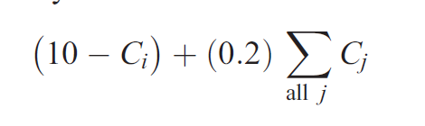
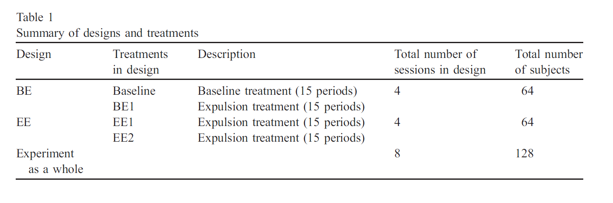
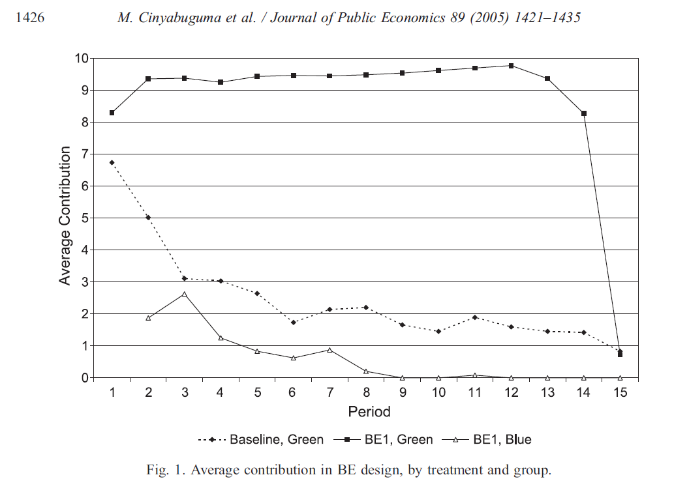
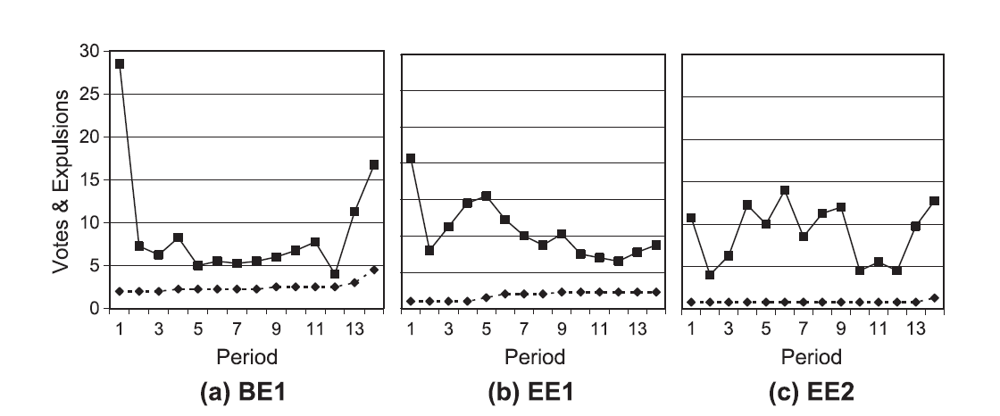
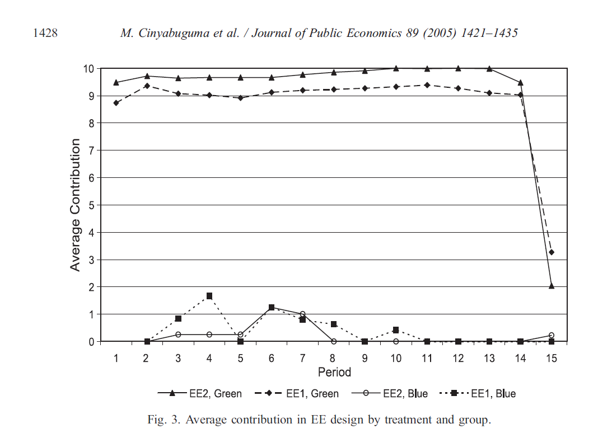
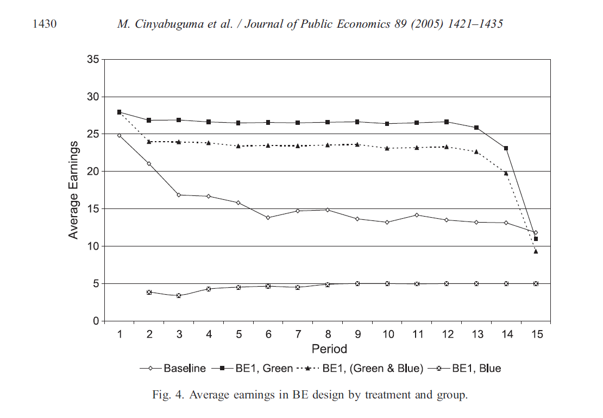
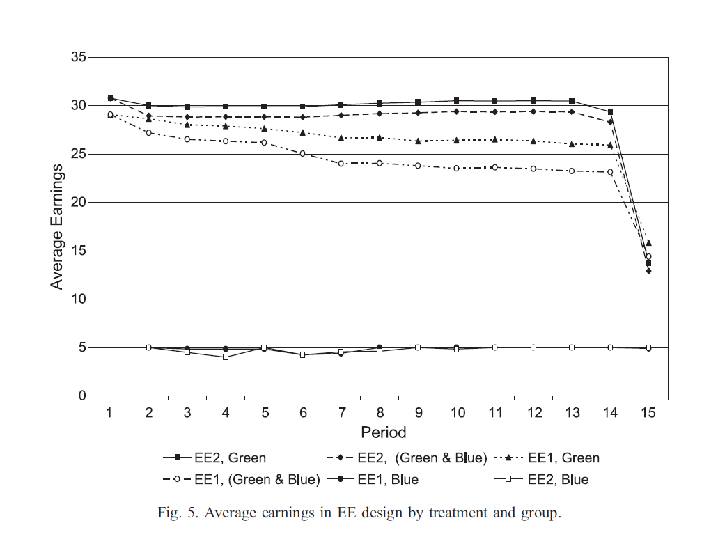
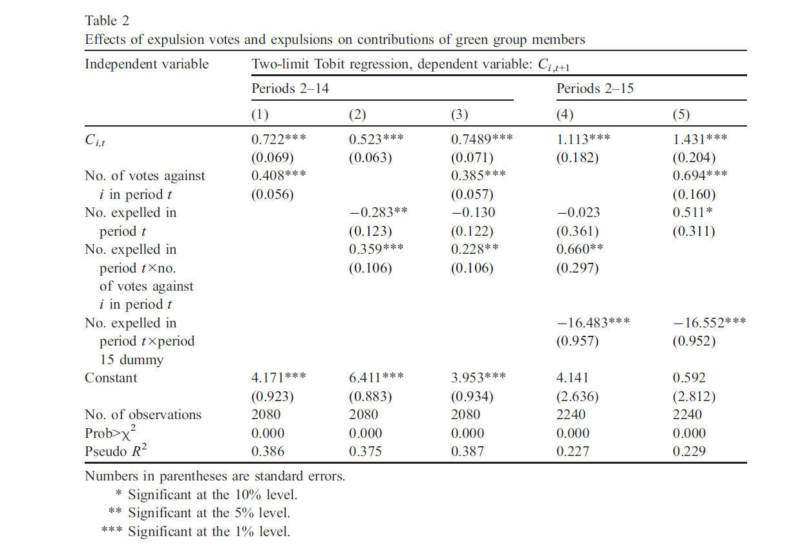

<!DOCTYPE html>
<html lang="en">
  
    <head>
      <meta charset="UTF-8">
      <meta name="viewport" content="width=device-width, initial-scale=1.0">
      <title>Lab 4 Asst</title>
      <!-- Bootstrap CSS -->
      <link href="https://cdn.jsdelivr.net/npm/bootstrap/dist/css/bootstrap.min.css" rel="stylesheet">
      <link href="/style.css" rel="stylesheet">
      
  </head>
 
  <body>
    <div class="note">
        This page is developed for assignment purposes just to practice something.
    </div>
    <header>
      <h1>
        Cooperation under the threat of expulsion in a public goods experiment
      </h1>
      <p>Matthias Cinyabuguma, Talbot Page, Louis Putterman*</p>
      <p>
        Department of Economics, Brown University, Box B, Providence, RI, 02912,
        United States
      </p>
      <p>
        Received 28 April 2003; received in revised form 28 November 2003;
        accepted 28 May 2004. Available online 28 October 2004
      </p>
    </header>

    <nav>
      <h2>Table of Contents</h2>
      <ul>
        <li><a href="#abstract">Abstract</a></li>
        <li><a href="#Introduction">Introduction</a></li>
        <li><a href="#Experimental">Experimental design</a></li>
        <li><a href="#Results">Results</a></li>
        <li><a href="#Conclusion">Conclusion</a></li>
        <li><a href="#Acknowledgement">Acknowledgement</a></li>
        <li><a href="#References">References</a></li>
      </ul>
    </nav>

    <main>
      <section id="abstract">
        <h2>Abstract</h2>
        <p>
          In a public goods experiment with the opportunity to vote to expel
          members of a group, we found that contributions rose to nearly 100% of
          endowments with significantly higher efficiency compared with a
          no-expulsion baseline. Our findings support the intuition that the
          threat of expulsion or ostracism is a device that helps some groups to
          provide public goods.
        </p>

        <p>Copyright@ 2004 Elsevier B.V. All rights reserved.</p>
        <p><i> JEL classification: C91; H41; D23</i></p>
        <p><i>Keywords: Public goods; Collective action; Punishment</i></p>
      </section>

      <section id="Introduction">
        <h2>Introduction</h2>
        <p>
          Using the Voluntary Contributions Mechanism (VCM) to study the
          free-rider problem, experimentalists have found several stylized
          facts: Contributions tend to average somewhat over 50% of endowments
          in the first period of play, but to decay to low levels with
          repetition (Davis and Holt, 1993). Pre-play face-to-face communication
          is a powerful tool for fostering cooperation (Isaac and Walker, 1988a;
          Sally, 1995).1. Cooperation can also be fostered by permitting players
          to target punishments at one another following their initial
          contribution decisions (Fehr and Ga¨chter, 2000, 2002; Carpenter and
          Matthews, 2002; Sefton et al., 2002; Bochet et al., in press; Page et
          al., in press).
        </p>
        <p>
          In many real organizations, the exercise of the power to determine who
          is in and who out of the relevant group provides an additional
          incentive to contribute to the group effort. Page et al. (in press)
          found that when subjects helped to determine group composition by
          ranking one another as prospective partners, higher contributing
          subjects were able to form groups of their own and to sustain
          cooperation, while self-interested players had incentives to act like
          cooperative types to get into groups with higher contributors. In this
          experiment, both contributions and efficiency were significantly
          higher in treatments with regrouping than in those in fixed groups.2
        </p>
        <p>
          In Page et al., groups were periodically formed de novo, so that one
          can think only loosely in terms of bgetting intoQ or bbeing ejected
          fromQ a group. The present study puts into sharper focus one aspect of
          membership determination, the right to expel members. We model a group
          that provides its members with a public good through a VCM but where
          the group has the power to expel members, converting them into
          non-members excluded from consuming the good. While this remedy is
          inapplicable to public goods like national defense and clean air,
          there are nonetheless real-world applications in which a good is
          public to members but not to non-members of a group. Examples include
          partnerships, teams, and associations from which members can be
          expelled for nonfulfillment of their obligations. Commonalities also
          exist with a broader range of collective action environments, such as
          ordinary workplaces, and clubs and organizations that provide both
          public goods and private benefits including sociability. Although our
          experiment involves a formal sanctioning process, this might also be
          viewed as an approximate representation of the less formal social
          sanctions that come into play in some of these settings. Our paper is
          related to a theoretical paper by Hirshleifer and Rasmusen (1989),
          which studied a finitely repeated public goods game, where the act of
          expulsion was costless to the expellers, and found an equilibrium with
          cooperation. Our paper is also related to a study by Bowles and Gintis
          (2004) of how a propensity to engage in costly expulsion of
          non-cooperators in small groups might have emerged in human
          pre-history through a process of group selection. To our knowledge,
          however, this is the first experimental study of expulsion as an
          incentive toward cooperation in a public goods game.
        </p>
        <p>
          Our paper adds to the emerging literature on mechanisms to sanction
          free-riding and to a broader literature which has begun to provide a
          better understanding of behaviors in collective action environments.
          That emerging literature, including Andreoni (1988), Offerman et al.
          (1996), Fischbacher et al. (2001), Kurzban and Houser (2001), Ahn et
          al. (2003), Gunnthorsdottir et al. (2002), and Casari and Plott
          (2003), makes allowances for the presence of more than one type of
          agent and for a Bayesian-type solution to finitely repeated games
          (Kreps et al., 1982). Our findings are difficult to explain unless
          some agents care about something in addition to monetary payoffs.3
        </p>
        <p>
          The rest of the paper proceeds as follows. In Section 2, we describe
          the set-up of the experiment. In Section 3, we describe and analyze
          our experimental results with respect to contribution decisions,
          expulsion votes, and efficiency (efficiency is linear in net earnings
          in this experiment). We summarize our findings and provide concluding
          comments in Section 4. An extended discussion of theoretical issues
          and of further results is contained in our working paper (Cinyabuguma
          et al., 2004).
        </p>
      </section>

      <section id="Experimental">
        <h2>Experimental design</h2>
        <p>
          In a VCM, subjects are assigned to groups, each subject is provided
          with an endowment of money or tokens, and each is asked to allocate
          his or her endowment between a private and a group account. In our
          baseline treatment, a group of 16 subjects received 10 experimental
          dollars (hereafter, E$10) at the beginning of each of 15 periods of
          play.4 In a given period, a subject i’s earnings in experimental
          dollars were given by
        </p>
        

        <p>
          where Ci is the amount i assigned (contributed) to the group account
          and Pall j Cj is the sum of contributions to the group account by all
          members, i included. In the baseline treatment, group composition
          remained fixed. Following each contribution decision, subjects were
          shown on their monitors a list of one another’s assignments to the
          group account in the current period and in the previous two periods,
          each individual’s average assignment so far, and his or her earnings
          in the current period and so far in the treatment, with each subject
          identified only by a randomly assigned letter that remained fixed for
          the treatment, and with subject information displayed in a random
          order. The task of allocating funds between the two accounts was
          repeated 15 times, with the terminal period being known from the start
          to all participants.5
        </p>
        <p>
          The expulsion treatment differed from the baseline treatment as
          follows. Subjects also began in a group of 16 playing the game just
          described, but a second stage followed the
        </p>
        <p>
          allocation decision in each period but the last. In this stage,
          subjects were shown the same information about one another’s current
          and past contributions and earnings as in the baseline treatment, but
          next to the information for each subject was a box that could be
          checked to register a vote for removing that individual from the
          original group, called bthe Green groupQ. After each such vote, the
          list was shown again, with the boxes now showing the number of votes
          cast to expel each individual. If half or more of the current members
          of the Green group voted to expel a group member, that subject was
          moved for the remainder of the 15 periods to a secondary group dubbed
          bthe Blue groupQ(for mnemonic purposes, think of expelled subjects
          becoming bblueQ), where the same allocation game was played, except
          with endowments of only five experimental dollars each period, and
          with no voting stage.6 When the coalition to expel an individual was
          large enough to be effective, each subject who voted for that person’s
          expulsion was debited 25 experimental cents (approximately 1 real
          cent). If the required half of current Green group members was not
          achieved, no money was deducted for the votes cast. Since members saw
          the number of votes against each individual, votes could have a
          warning effect when insufficient to expel. As with the baseline
          treatment, the expulsion treatment continued for 15 periods, with the
          number of periods being announced at the outset and the current period
          number being displayed to subjects in each period.
        </p>
        <p>
          We used two designs of experimental sessions. In the first design,
          called BE, a baseline treatment was followed by an expulsion
          treatment. This allowed us to study the treatment effect for the same
          group of subjects. In the second design, called EE, an expulsion
          treatment was followed by another expulsion treatment. This allowed us
          to check for sequencing and learning effects.7 We refer to the
          expulsion treatment in the first design as BE1, the first (and only)
          expulsion treatment in this design. We refer to the first expulsion
          treatment of the second design as EE1, and the second treatment of
          this design as EE2.
        </p>
        <p>
          We conducted four sessions of each design. There were 16 inexperienced
          participants in each of the eight sessions.8 In both session designs,
          subjects learned of the second treatment only after the first
          treatment ended.9 Table 1 summarizes the structure of the experiment
          as a whole.
        </p>
        <p>
          The expulsion condition was designed so that it would never be
          rational for a payoffmaximizing agent to vote to expel another group
          member if there were common knowledge that all subjects cared about
          their own payoffs only, whereas expulsions might be rational with
          beliefs that some might have a preference for punishing free riders
          (compare Kreps et al., 1982).10 Further discussion of the theoretical
          considerations behind the design are provided in our working paper,
          which also contains the experiment instructions read by the subjects.
        </p>
        
      </section>

      <section id="Results">
        <h2>Results</h2>
        <p></p>
      </section>

      <section id="Results">
        <h2>Results</h2>
        <p>
          <b
            >Question 1. What was the pattern of contributions in the baseline
            treatment?</b
          >
        </p>
        <p>
          Result 1. There were substantial contributions to the group account in
          the baseline treatment, but they declined rapidly with repetition.
        </p>
        <p>
          The middle line of Fig. 1 shows average contributions by period in the
          baseline treatment. Contributions in period 1 averaged 67% of
          endowment, but their level dropped to 31% in period 3 and continued to
          decline, averaging less than 20% throughout the last seven periods and
          standing at only 8% in period 15.11 This is much like baseline
          behavior in other VCM experiments.12
        </p>
        <p>
          <b>
            Question 2. In expulsion treatments, how often did subjects cast
            expulsion votes and how many expulsions occurred?
          </b>
        </p>
        <p>
          Result 2. In most treatments with expulsion in most sessions, a
          majority of subjects voted to expel another subject at least once, and
          in almost all expulsion treatments and sessions, between one and four
          subjects were expelled from the Green group.
        </p>
        <p>
          Fig. 2 summarizes for each of the expulsion treatments BE1, EE1 and
          EE2 the average cumulative number of subjects who had been expelled
          from the Green group as of the end of each period, and the average
          number of expulsion votes cast that period. The dashed lines show that
          an average of 4.5 were expelled by the end of the BE1 treatment, 2.25
          by the end of the EE1 treatment, and 1.25 by the end of the EE2
          treatment. The solid lines show that the largest number of expulsion
          votes were cast in each of the expulsion treatments’ first period,
          usually leading to the expulsion of one or more subjects, and that the
          number of votes cast fluctuated thereafter, with a noticeable uptick
          in the last periods in response to a rise in defections from
          contributing to the group account.13 The data show expulsion votes to
          be well-targeted, with every expelled individual being either the
          lowest contributor in the group, or a next-lowest-contributor expelled
          together with a lowest contributor.14 Nevertheless, a few individuals
          voted to expel high contributors, and contrary to the conjecture that
          higher contributors are more likely to vote to expel low ones, we
          found a negative correlation between an individual’s average
          contribution and the number of votes he cast against low contributors
          (see Cinyabuguma et al., 2004).
        </p>
        
        
        <p>
          <b>
            Question 3. What was the effect of the expulsion possibility on
            cooperation? Was the threat of expulsion sufficient to raise
            contributions and earnings in the Green group? Overall?
          </b>
        </p>
        <p>
          Result 3a. In each of the three expulsion treatments BE1, EE1, and
          EE2, contributions to the group account were higher than in the
          baseline treatment even in the first period, indicating an
          anticipation effect, and they rose, rather than fell, with repetition
          and evidence of expulsions and expulsion votes.
        </p>
        <p>
          Consider first the Green (i.e., original) group contributions in the
          BE1 expulsion treatment, averaged by period in the upper line of Fig.
          1. The average proportion of the endowment contributed to the group
          account began at 83% in BE1 compared with 67% in period 1 of the four
          baseline treatments, suggesting that subjects adjusted their behaviors
          in anticipation of the threat of expulsion.15 The average contribution
          rose with repetition for the first 12 periods, approaching 98% of
          endowment in period 12.16
        </p>
        
        <p>
          Next, consider the pattern of contributions in the second design, with
          two expulsion treatments. Fig. 3 shows that the patterns in both
          expulsion treatments of the EE design were similar to each other and
          similar to the expulsion treatment of the BE design. In the first
          expulsion treatment of this design, EE1 (second line from the top),
          Green group contributions began at 87% of endowment, rose in period 2,
          and remained between 90% and 94% of endowment through period 14.17 In
          the second expulsion treatment, EE2 (the top line), average
          contributions began still higher, at 94.8%, and rose to the maximum
          possible for each and every Green group subject in periods ten through
          thirteen before declining slightly in period 14.18 Contributions were
          higher in the second than in the first treatment in every session of
          the EE design.19
        </p>
        <p>
          Result 3b. Average contributions were significantly higher in
          expulsion treatments than in the baseline treatment, even when Blue
          group members are included in the calculation.
        </p>
        <p>
          At the individual level, a within-subject comparison shows that 51 of
          the 52 BE subjects who were never expelled from the Green group
          contributed more in the treatment with expulsion than in the baseline
          treatment, with the remaining subject contributing E$10 every period
          of both treatments. At the session level, a Mann–Whitney test
          comparing average contributions in the expulsion and baseline
          treatments of the four BE sessions, with one observation per session
          and treatment, finds that average contributions were significantly
          higher with expulsion, with a p-value of 0.0145 in a one-tailed test,
          even when contributions of expelled subjects are included.
          Mann–Whitney tests also show contributions to be higher in each of the
          two EE expulsion treatments than in the BE baseline treatment, with
          p=0.0145 even when the contributions of Blue group members are
          included.20 (In all three expulsion treatments, the number of subjects
          sent to the Blue group was never large enough to make contributing to
          the public good profitable there, as a result of which most Blue group
          members soon set their contributions to zero—see Figs. 1 and 3).
        </p>
        <p>
          Result 3c. Although subjects voted out of the Green group earned far
          less than others, earnings averaged over all subjects (including Blue
          group members) were nonetheless higher in expulsion than in baseline
          treatments. Thus, the addition of an expulsion option increased
          overall efficiency, and not just earnings in the non-expelled group.
        </p>
        <p>
          Average earnings by period and group are graphed in Figs. 4 and 5.
          Averaging earnings across the full 15 periods of each treatment but
          treating the plays of a treatment in different sessions as separate
          observations, we performed Mann–Whitney tests paralleling those for
          contributions. The differences in earnings were found to be
          significant to the same degree as were those in contributions, with
          one-tailed Mann– Whitney tests yielding p-values of 0.0145 in all
          three expulsion versus baseline treatment comparisons (each of BE1,
          EE1, and EE2 versus baseline), even when Green group and Blue group
          members are included. Average earnings in every one of the 12 group
          plays of an expulsion treatment (four sessions each for BE1, EE1, and
          EE2) exceeded average earnings in every one of the four group plays of
          the baseline treatment.
        </p>
        <p>
          Result 3d. There was a pronounced decline in contributions when the
          expulsion threat was removed in period 15 of each expulsion treatment.
        </p>
        <p>
          Figs. 1 and 3 show sharp last period declines in contributions for
          Green group members in treatments BE1, EE1, and EE2. This supports the
          interpretation that high contributions in earlier periods were
          motivated mainly by fear of expulsion. The sharp decline also
          contrasts with the much milder end-game declines in cooperation in VCM
          experiments with communication (Brosig et al.; Bochet et al.) and in
          VCM experiments in which high contributors come to be grouped together
          either by the experimenter (Gunnthorsdottir et al., 2002) or by an
          endogenous grouping process (Page et al.), which suggests to us that
          the threat of expulsion not only substitutes for but also reduces the
          emergence of trust and expectations of cooperation among our
          subjects.21
        </p>
        
        
        
        <p>
          <b
            >Question 4. Is there more direct evidence of a signaling effect of
            expulsion votes?</b
          >
        </p>
        <p>
          Result 4. In expulsion treatments, subjects increased their
          contributions more the more others cast votes to expel them from the
          Green group, and, especially for the subjects more targeted in the
          votes, after the expulsion of other group members.
        </p>
        <p>
          To identify the impacts of expulsions and expulsion votes on the
          contributions of individual Green group members, we report in Table 2
          a series of five 2-limit Tobit regressions in each of which the
          dependent variable is individual i’s contribution to the group account
          in period t+1 and explanatory variables include i’s contribution in
          period t and a set of individual fixed effects.22 Columns (1)–(3)
          report regressions in which the dependent variable is observed in
          periods 2–14 only, leaving out the pronounced end-game effect, and
          columns (4) and (5) report regressions for periods 2–15, with an
          end-game control (as specified below).23 In regression (1), we include
          the number of votes cast against i in period t’s voting stage, finding
          it to have a statistically significant and economically important
          impact on contributions. Clearly, subjects took votes against them as
          a warning that they could be expelled if they did not raise their
          contributions.
        </p>
        <p>
          When instead of the number of votes we used the number of subjects (if
          any) expelled from the Green group in period t in subject i’s session
          (a specification not shown in the table), its coefficient was
          insignificant. In regression (2), we include both the number expelled
          and the product of the number expelled and the number of votes against
          subject i. The result supports the conjecture that seeing subjects
          expelled from one’s group led i to increase her contribution to the
          degree that i also received some votes (see the interaction term
          votesexpelled); non-recipients of expulsion votes on average slightly
          reduced their contributions, however.24
        </p>
        <p>
          In regression (3), both votes received and the expulsions and
          votesexpulsion variables are entered simultaneously. The coefficient
          on number expelled becomes insignificant, while the other two
          variables remain significant, suggesting that a subject who received
          expulsion votes increased her contribution, and that she did so all
          the more the more group members had received enough votes to actually
          be expelled.
        </p>
        <p>
          Regressions (4) and (5) include the observations for period 15, in
          which contributions declined dramatically as the threat of expulsion
          was removed. Since there were also a number of expulsions of late-game
          defectors in period 14, this large decline would suggest, spuriously,
          that expulsions led quite generally to lower contributions, unless
          controlled by an end-game dummy. The specifications shown thus include
          an interaction between a period 15 dummy variable and the number
          expelled.25 The negative coefficient on the number expelled becomes
          smaller and still less significant in regression (4), which also
          includes the term interacting number expelled with votes against i.
          When this last interaction variable is dropped but the votes variable
          is entered by itself, in regression (5), both votes against i and the
          number expelled have significant positive coefficients.
        </p>
        <p>
          In all, the results in Table 2 support the proposition that
          expulsions, votes short of expulsion, and the combination of
          expulsions and votes motivated subjects to raise their contributions
          to the group account, thus directly contributing to the difference
          between expulsion treatment and baseline outcomes.26
        </p>
      </section>

      <section id="Conclusion">
        <h2>Conclusion</h2>
        <p>
          In partnerships, communities, and organizations of various types,
          people often strive to cooperate in the absence of state enforcement.
          The threat that an uncooperative individual may be ostracized or
          expelled is one way to foster cooperation. Like a trigger strategy,
          the expulsion mechanism threatens a dire consequence with
          irreversibility. In the experiment, much of the effectiveness of the
          expulsion mechanism can be attributed to the fact that expulsion was
          used so sparingly, less than three times on average in a treatment of
          15 periods. Low contributors were often warned by increasing but still
          less-than-majority votes before they were expelled, and most of the
          low contributors responded to the warnings with higher contributions,
          thus avoiding expulsion. The bdark sideQ of the mechanism is that by
          relying so heavily on the implied threat of expulsion, it didn’t allow
          group members to develop trust in one another’s positive reciprocity,
          so cooperation collapsed when the threat was removed.
        </p>
        <p>
          An important theoretical point is that our experiment was designed so
          that it would never be rational to vote for expulsion if all subjects
          cared only about maximizing their own payoffs and had common knowledge
          of this. If each individual cared only for her own material outcome
          without emotions of annoyance at others’ free riding, and if this were
          common knowledge, the threat of expulsion would not be credible.27 Our
          results thus join others in the recent literature which suggest that
          human nature includes other types of preferences as well as
          self-interested preferences, and that this heterogeneity renders
          credible what otherwise is not a credible threat, making the danger of
          punishment (in this case, exclusion) a reason to pull one’s weight in
          a group endeavor.
        </p>
      </section>

      <section id="Acknowledgement">
        <h2>Acknowledgement</h2>
        <p>
          We wish to thank Sam Bowles, Rob Boyd, Ernst Fehr, and Herb Gintis for
          suggestions leading to the design of the experiments reported here,
          and Devin Borland, Chris Horn, George Athanassocoupolos, and Bulent
          Unel for programming, help in conducting the experiments, and pointers
          on data analysis. We are grateful to the guest editors and to two
          anonymous referees for their valuable comments. We would like to thank
          the MacArthur Foundation Network on Norms and Preferences and the
          National Science Foundation grant SES-0001769 for support of this
          research.
        </p>
      </section>


      <section id="References">
        <h2>References</h2>
        <p>
            Ahn, T.K., Ostrom, Elinor, Walker, James, 2003. Heterogeneous preferences
            and collective action. Public Choice (117), 295 – 314.
          </p>
          <p>
            Andreoni, James, 1988. Why free ride? Strategies and learning in public
            goods experiments. Journal of Public Economics (37), 291 – 304.
          </p>
          <p>
            Andreoni, James, 1995. Cooperation in public-goods experiments: kindness
            or confusion? American Economic Review (85), 891 – 904.
          </p>
          <p>
            Bochet, Olivier, Talbot Page, Louis Putterman, in press. Communication and
            Punishment in Voluntary Contribution Experiments. Journal of Economic
            Behavior and Organization.
          </p>
          <p class="s1" style="padding-left: 5pt; text-indent: 0pt; text-align: left">
            Bowles, Samuel, Gintis, Herbert, 2004. The evolution of strong
            reciprocity: cooperation in heterogeneous groups.
          </p>
          <p
            class="s1"
            style="padding-left: 17pt; text-indent: 0pt; text-align: left"
          >
            Theoretical Population Biology (65), 17 – 28.
          </p>
          <p>
            Brosig, Jeannette, Weimann, Joachim, Ockenfels, Axel, 2003. The effect of
            communication media on cooperation? German Economic Review 4 (2), 217 –
            241.
          </p>
          <p>
            Carpenter, Jeffrey, Matthews, Peter, 2002. Social Reciprocity. Middlebury
            College Department of Economics Working Paper 29.
          </p>
          <p>
            Casari, Marco, Plott, Charles R., 2003. Decentralized management of common
            property resources: experiments with a centuries-old institution. Journal
            of Economic Behavior and Organization 51 (2), 217 – 247.
          </p>
          <p>
            Cinyabuguma, Matthias, Page, Talbot, Louis Putterman, 2004. Cooperation
            Under the Threat of Expulsion in a Public Goods Experiment. Working Paper
            2004-05. Department of Economics, Brown University.
          </p>
          <p
            class="s1"
            style="
              padding-left: 5pt;
              text-indent: 0pt;
              line-height: 108%;
              text-align: left;
            "
          >
            Davis, Douglas D., Holt, Charles A., 1993. Experimental Economics.
            Princeton University Press, Princeton. Ehrhart, Karl-Martin, Keser,
            Claudia, 1999. Mobility and Cooperation: On the Run. CIRANO 99s-24,
          </p>
          <p
            class="s1"
            style="padding-left: 17pt; text-indent: 0pt; text-align: left"
          >
            Montreal.
          </p>
          <p class="s1" style="padding-left: 5pt; text-indent: 0pt; text-align: left">
            Fehr, Ernst, G<span class="s67">7</span>chter, Simon, 2000. Cooperation
            and punishment. American Economic Review 90, 980 – 994. Fehr, Ernst,
            G<span class="s67">7</span>chter, Simon, 2002. Altruistic punishment in
            humans. Nature 415, 137 – 140.
          </p>
          <p
            class="s1"
            style="padding-left: 17pt; text-indent: -12pt; text-align: justify"
          >
            Fischbacher, Urs, G<span class="s67">7</span>chter, Simon, Fehr, Ernst,
            2001. Are people conditionally cooperative? Evidence from a public goods
            experiment. Economics Letters 71, 397 – 404.
          </p>
          <p>
            Frohlich, Norman, Oppenheimer, Joe, 1998. Some consequences of e-mail vs.
            face-to-face communication in experiment. Journal of Economic Behavior and
            Organization 35 (3), 389 – 403.
          </p>
          <p>
            Gunnthorsdottir, Anna, Daniel Houser, Kevin McCabe, Holly Ameden, 2002.
            Disposition, History and Contributions in a Public Goods Experiment.
            Unpublished manuscript, Department of Economics and Economic Science
            Laboratory, University of Arizona.
          </p>
          <p>
            Hirshleifer, Jack, 1987. On the emotions as guarantors of threats and
            promises. In: Dupre´, John (Ed.), The Latest on the Best: Essays on
            Evolution and Optimality. MIT Press, Cambridge.
          </p>
          <p>
            Hirshleifer, David, Rasmusen, Eric, 1989. Cooperation in a repeated
            prisoners dilemma with ostracism. Journal of Economic Behavior and
            Organization 12 (1), 87 – 106.
          </p>
          <p>
            Isaac, R. Mark, Walker, James M., 1988a. Communication and free-riding
            behavior: the voluntary contributions mechanism. Economic Inquiry 26, 585
            – 608.
          </p>
          <p>
            Isaac, R. Mark, Walker, James, 1988b. Group size effects in public goods
            provision: the voluntary contributions mechanism. Quarterly Journal of
            Economics 103 (1), 179 – 199.
          </p>
          <p style="text-indent: 0pt; text-align: left"><br /></p>
          <p>
            <a name="bookmark15"
              >Kreps, David, Milgrom, Paul, Roberts, John, Wilson, Robert, 1982.
              Rational cooperation in finitely repeated prisoners’ dilemma. Journal of
              Economic Theory 27, 245 – 252.</a
            >
          </p>
          <p class="s1" style="padding-left: 9pt; text-indent: 0pt; text-align: left">
            Kurzban, Robert, Houser, Daniel, 2001. Individual differences in
            cooperation in a circular public goods game.
          </p>
          <p
            class="s1"
            style="padding-left: 21pt; text-indent: 0pt; text-align: left"
          >
            European Journal of Personality 15 (S1), S37 – S52.
          </p>
          <p>
            Offerman, Theo, Sonnemans, Joep, Schram, Arthur, 1996. Value orientations,
            expectations, and voluntary contributions in public goods. Economic
            Journal 106, 817 – 845.
          </p>
          <p>
            Page, Talbot, Louis Putterman, Bulent Unel, in press. Voluntary
            Association in Public Goods Experiments: Reciprocity, Mimicry, and
            Efficiency. Economic Journal.
          </p>
          <p>
            Sally, David, 1995. Conversation and cooperation in social dilemmas: a
            meta-analysis of experiments from 1958 to 1992. Rationality and Society 7
            (1), 58 – 92.
          </p>
          <p>
            Sefton, Martin, Robert Shupp, James Walker, 2002. The Effect of Rewards
            and Sanctions in Provision of Public Goods. Working Paper, University of
            Nottingham and Indiana University.
          </p>
        </section>
    </main>
  </body>

<article>
  The purpose of choosing this article could be to gain insights into the dynamics of cooperation and collective action within groups, communities, and organizations. The article discusses the use of expulsion as a mechanism to promote cooperation in situations where state enforcement is absent. It highlights the effectiveness of this mechanism and the conditions under which it works, shedding light on human behavior and preferences beyond mere self-interest. By studying the article, one can better understand the complexities of group dynamics, trust-building, and the interplay between individual and collective motivations, which can have practical implications in fields such as sociology, economics, and organizational management.
</article>

</html>
